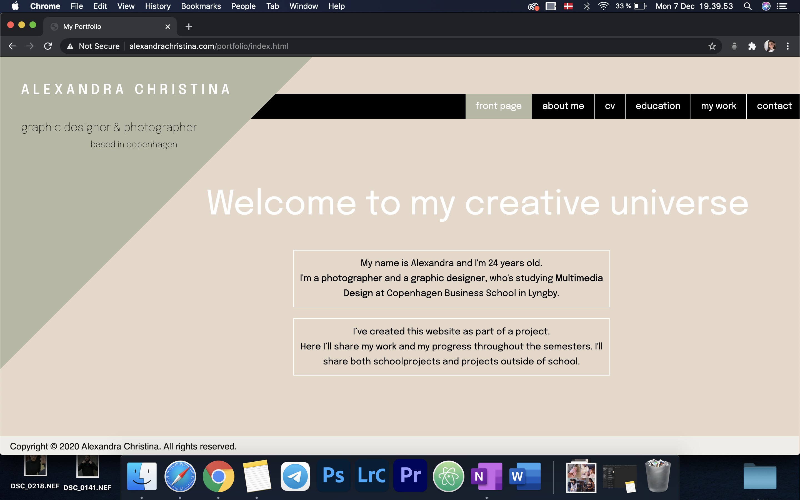

In this flow we learned about HTML 5 and CSS 3. We also learned about file structure, different layout principles, about GitHub and how to upload to your domain.
In the final project we had to code our own website with HTML and CSS.
Flowproject

This is how my website looked in the first place. I took a lot from the prototype, but at the same time I changed a lot of things, because I didn't like the first design I made.
I didn't get as much done as I wanted to, but I knew I would catch up on it later.
Feedback
- Very creative with the triangle.
- The "education" page is really good.
- Could change "about me" to "about" and "my work" to work.
Changes after the feedback
I didn't actually change anything after I got the feedback, because I knew we were going to work on the website later on. I wrote down the feedback, so I wouldn't forget it.
The new version looks a lot different. I chose to change the "about me" to "about" - it has a better sound to it.
I got tired of the triangle and chose to remove it and add a logo instead. I also changed the layout and added some colors to my colorscheme. Some nice photos were added, and now the site looks a lot better and more "professional" than before.